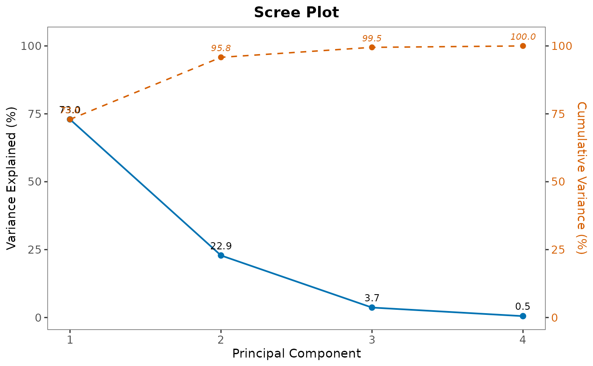
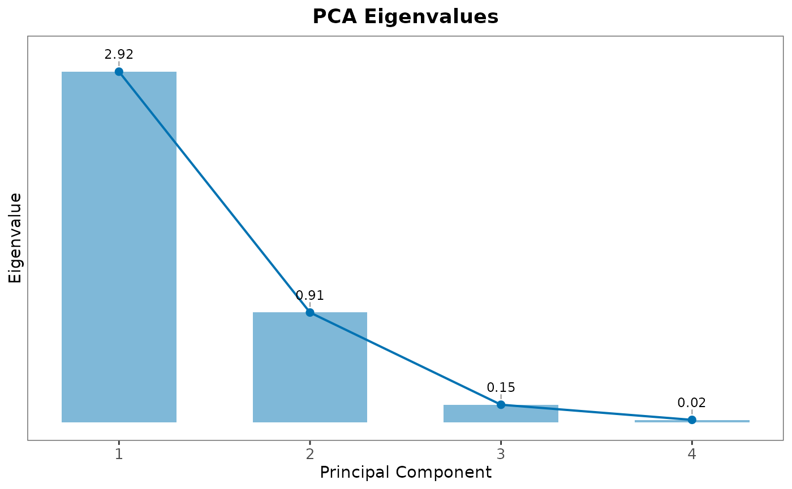

Creates a scree plot showing variance explained or eigenvalues per principal component. Helps determine the number of meaningful PCs to retain.
Usage
plot_scree(
pca_result,
title = "Scree Plot",
subtitle = NULL,
caption = NULL,
position = "center",
what = "variance",
type = "line",
max_pc = 15,
show_cumulative = TRUE,
show_values = TRUE,
bar_color = "#0072B2",
line_color = "#0072B2",
cumulative_color = "#D55E00",
theme = "nature",
base_size = 11,
font_family = "",
title_size = NULL,
subtitle_size = NULL,
xlab_size = NULL,
ylab_size = NULL,
axis_text_size = NULL,
label_size = NULL,
verbose = FALSE
)Arguments
- pca_result
List. Output from
run_pca().- title
Character. Main plot title. Default:
"Scree Plot".- subtitle
Character. Plot subtitle. Default:
NULL(no subtitle).- caption
Character. Plot caption (bottom-right). Default:
NULL(no caption).- position
Character. Horizontal alignment of title, subtitle, and caption. Options:
"left","center","right". Default:"center".- what
Character. What to plot:
"variance"(variance explained %) or"eigen"(eigenvalues). Default:"variance".- type
Character. Plot geometry:
"bar","line", or"both". Default:"line".- max_pc
Integer. Maximum number of PCs to display. Default:
15.- show_cumulative
Logical. Show cumulative variance explained as a dashed line with a secondary y-axis. Only available when
what = "variance". Default:TRUE.- show_values
Logical. Display value labels on the plot using
ggrepelto avoid overlap. Falls back togeom_textifggrepelis not installed. Default:TRUE.- bar_color
Character. Fill color for bars (when
type = "bar"or"both"). Default:"#0072B2"(Okabe-Ito blue).- line_color
Character. Color for the primary line and points (when
type = "line"or"both"). Default:"#0072B2"(Okabe-Ito blue).- cumulative_color
Character. Color for the cumulative variance line, points, and labels. Default:
"#D55E00"(Okabe-Ito vermillion).- theme
Character. ggplot2 theme to apply. Options:
"nature","classic","plos","minimal","bw","light","dark","gray". Default:"nature"(a clean, publication-ready style based ontheme_bw()with no gridlines).- base_size
Base font size in points; every text element scales from it. Default:
11, which suits a default 7 x 5 inch Quarto figure.- font_family
Character. Font family for all text elements. Default:
""(the graphics device's default).- title_size, subtitle_size, xlab_size, ylab_size, axis_text_size, label_size
Font sizes in points for the title, subtitle, x-axis label, y-axis label, tick labels and value labels. Default
NULLderives each frombase_size.- verbose
Logical. Print progress messages. Default:
FALSE.
Details
Scree Plot Interpretation:
The scree plot helps determine how many principal components to retain:
Elbow Method: Look for an "elbow" where the curve flattens. PCs before the elbow capture meaningful variance; those after capture mostly noise.
Kaiser Criterion: Retain PCs with eigenvalues > 1 (when
what = "eigen"). These PCs explain more variance than a single original variable.Cumulative Variance: Retain enough PCs to explain 70-90% of total variance (shown when
show_cumulative = TRUE).
Plot Types:
"bar": Traditional bar chart; good for discrete comparison."line": Line plot; better for visualising trends and the elbow."both": Combines bars and a line for a comprehensive view.
Cumulative Variance Line:
When show_cumulative = TRUE, a dashed line showing cumulative variance is
overlaid on a shared y-axis scale. A secondary axis on the right is labelled
accordingly. Only available when what = "variance".
When to Use Each Metric:
Variance explained: More intuitive (percentages). Recommended for most users.
Eigenvalues: Useful for the Kaiser criterion and advanced analysis.
Themes:
The "nature" theme (default) applies theme_bw() with all gridlines removed -
suitable for journal figures. Other options map directly to their ggplot2 equivalents,
also with gridlines suppressed.
References
Cattell, R.B. (1966). The scree test for the number of factors. Multivariate Behavioral Research, 1(2), 245-276. doi:10.1207/s15327906mbr0102_10
Kaiser, H.F. (1960). The application of electronic computers to factor analysis. Educational and Psychological Measurement, 20(1), 141-151. doi:10.1177/001316446002000116
Examples
pca <- run_pca(scale(iris[, 1:4]), iris["Species"], group = "Species",
verbose = FALSE)
plot_scree(pca, verbose = FALSE)

plot_scree(pca, what = "eigen", type = "both", title = "PCA Eigenvalues",
verbose = FALSE)
#> Warning: 'show_cumulative' is only available when what = 'variance'. Setting show_cumulative = FALSE.
#> Solution: Use what = 'variance' if you want to show cumulative variance.
